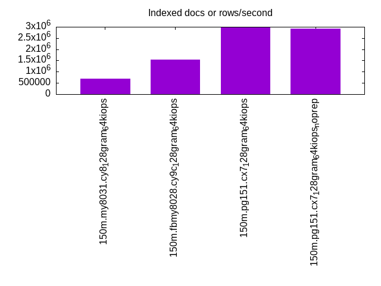

This is a report for the insert benchmark with 150M docs and 22 client(s). It is generated by scripts (bash, awk, sed) and Tufte might not be impressed. An overview of the insert benchmark is here and a short update is here. Below, by DBMS, I mean DBMS+version.config. An example is my8020.c10b40 where my means MySQL, 8020 is version 8.0.20 and c10b40 is the name for the configuration file.
The test server is an c6i.16xl with 32 cores, 64 HW threads (hyperthread disabled), 128G RAM and io2 storage (5T, 64K IOPs). The benchmark was run with 22 clients and there was 1 or 2 connections per client (1 for queries, 1 for inserts). The benchmark loads 100M rows without secondary indexes, creates secondary indexes, loads another 50M rows then does 3 read+write tests for one hour each that do queries as fast as possible with 100, 500 and then 1000 writes/second/client concurrent with the queries. The database is cached by the storage engine and the only IO is for writes. Clients and the DBMS share one server. The per-database configs are in the per-database subdirectories here.
The tested DBMS are:
The numbers are inserts/s for l.i0 and l.i1, indexed docs (or rows) /s for l.x and queries/s for q*.2. The values are the average rate over the entire test for inserts (IPS) and queries (QPS). The range of values for IPS and QPS is split into 3 parts: bottom 25%, middle 50%, top 25%. Values in the bottom 25% have a red background, values in the top 25% have a green background and values in the middle have no color. A gray background is used for values that can be ignored because the DBMS did not sustain the target insert rate. Red backgrounds are not used when the minimum value is within 80% of the max value.
| dbms | l.i0 | l.x | l.i1 | q100.1 | q500.1 | q1000.1 |
|---|---|---|---|---|---|---|
| 150m.my8031.cy8_128gram_64kiops | 1278751 | 690510 | 534988 | 147313 | 145792 | 144898 |
| 150m.fbmy8028.cy9c_128gram_64kiops | 845626 | 1543494 | 263461 | 123811 | 121898 | 118668 |
| 150m.pg151.cx7_128gram_64kiops | 1497966 | 2998788 | 624152 | 256117 | 251034 | 253315 |
| 150m.pg151.cx7_128gram_64kiops_noprep | 1497966 | 2915489 | 624152 | 199270 | 195671 | 194225 |
This lists the average rate of inserts/s for the tests that do inserts concurrent with queries. For such tests the query rate is listed in the table above. The read+write tests are setup so that the insert rate should match the target rate every second. Cells that are not at least 95% of the target have a red background to indicate a failure to satisfy the target.
| dbms | q100.1 | q500.1 | q1000.1 |
|---|---|---|---|
| my8031.cy8_128gram_64kiops | 2185 | 10924 | 21854 |
| fbmy8028.cy9c_128gram_64kiops | 2184 | 10921 | 21848 |
| pg151.cx7_128gram_64kiops | 2184 | 10924 | 21848 |
| pg151.cx7_128gram_64kiops_noprep | 2184 | 10927 | 21854 |
| target | 2200 | 11000 | 22000 |
l.i0: load without secondary indexes. Graphs for performance per 1-second interval are here.
Average throughput:
Insert response time histogram: each cell has the percentage of responses that take <= the time in the header and max is the max response time in seconds. For the max column values in the top 25% of the range have a red background and in the bottom 25% of the range have a green background. The red background is not used when the min value is within 80% of the max value.
| dbms | 256us | 1ms | 4ms | 16ms | 64ms | 256ms | 1s | 4s | 16s | gt | max |
|---|---|---|---|---|---|---|---|---|---|---|---|
| my8031.cy8_128gram_64kiops | 70.403 | 29.338 | 0.191 | 0.028 | 0.041 | 0.125 | |||||
| fbmy8028.cy9c_128gram_64kiops | 10.118 | 88.361 | 1.451 | 0.062 | 0.008 | 0.097 | |||||
| pg151.cx7_128gram_64kiops | 86.968 | 12.731 | 0.074 | 0.228 | 0.034 | ||||||
| pg151.cx7_128gram_64kiops_noprep | 87.229 | 12.495 | 0.077 | 0.198 | 0.033 |
Performance metrics for the DBMS listed above. Some are normalized by throughput, others are not. Legend for results is here.
ips qps rps rmbps wps wmbps rpq rkbpq wpi wkbpi csps cpups cspq cpupq dbgb1 dbgb2 rss maxop p50 p99 tag 1278751 0 0 0.0 1917.1 334.9 0.000 0.000 0.001 0.268 184626 58.2 0.144 15 7.0 135.6 14.6 0.125 113779 12187 150m.my8031.cy8_128gram_64kiops 845626 0 0 0.0 1333.0 302.9 0.000 0.000 0.002 0.367 300532 59.7 0.355 23 4.0 4.6 1.9 0.097 46662 3097 150m.fbmy8028.cy9c_128gram_64kiops 1497966 0 0 0.0 2636.5 615.8 0.000 0.000 0.002 0.421 167862 54.5 0.112 12 10.0 27.1 9.5 0.034 161665 31966 150m.pg151.cx7_128gram_64kiops 1497966 0 0 0.0 2638.1 616.3 0.000 0.000 0.002 0.421 166840 52.7 0.111 11 10.0 27.1 9.6 0.033 161129 999 150m.pg151.cx7_128gram_64kiops_noprep
l.x: create secondary indexes.
Average throughput:
Performance metrics for the DBMS listed above. Some are normalized by throughput, others are not. Legend for results is here.
ips qps rps rmbps wps wmbps rpq rkbpq wpi wkbpi csps cpups cspq cpupq dbgb1 dbgb2 rss maxop p50 p99 tag 690510 0 3862 247.6 13429.0 634.2 0.006 0.367 0.019 0.940 152756 30.8 0.221 14 15.6 144.1 19.3 0.003 NA NA 150m.my8031.cy8_128gram_64kiops 1543494 0 4 0.3 1310.0 298.2 0.000 0.000 0.001 0.198 9243 53.0 0.006 11 7.2 7.8 11.5 0.004 NA NA 150m.fbmy8028.cy9c_128gram_64kiops 2998788 0 0 0.0 3392.1 822.8 0.000 0.000 0.001 0.281 53053 26.5 0.018 3 19.3 44.8 0.0 0.048 NA NA 150m.pg151.cx7_128gram_64kiops 2915489 0 0 0.0 3354.8 813.0 0.000 0.000 0.001 0.286 49801 24.0 0.017 3 19.3 44.8 0.0 0.085 NA NA 150m.pg151.cx7_128gram_64kiops_noprep
l.i1: continue load after secondary indexes created. Graphs for performance per 1-second interval are here.
Average throughput:
Insert response time histogram: each cell has the percentage of responses that take <= the time in the header and max is the max response time in seconds. For the max column values in the top 25% of the range have a red background and in the bottom 25% of the range have a green background. The red background is not used when the min value is within 80% of the max value.
| dbms | 256us | 1ms | 4ms | 16ms | 64ms | 256ms | 1s | 4s | 16s | gt | max |
|---|---|---|---|---|---|---|---|---|---|---|---|
| my8031.cy8_128gram_64kiops | 0.175 | 99.114 | 0.379 | 0.221 | 0.110 | 0.002 | 0.453 | ||||
| fbmy8028.cy9c_128gram_64kiops | 1.594 | 50.776 | 47.589 | 0.031 | 0.010 | 0.076 | |||||
| pg151.cx7_128gram_64kiops | 17.975 | 81.476 | 0.052 | 0.498 | 0.038 | ||||||
| pg151.cx7_128gram_64kiops_noprep | 18.383 | 81.079 | 0.036 | 0.501 | 0.040 |
Performance metrics for the DBMS listed above. Some are normalized by throughput, others are not. Legend for results is here.
ips qps rps rmbps wps wmbps rpq rkbpq wpi wkbpi csps cpups cspq cpupq dbgb1 dbgb2 rss maxop p50 p99 tag 534988 0 5018 78.4 3482.1 422.6 0.009 0.150 0.007 0.809 182068 58.5 0.340 35 27.7 156.2 32.8 0.453 33224 300 150m.my8031.cy8_128gram_64kiops 263461 0 162 20.0 1408.7 325.5 0.001 0.078 0.005 1.265 100436 37.0 0.381 45 18.7 20.0 13.2 0.076 12387 11238 150m.fbmy8028.cy9c_128gram_64kiops 624152 0 0 0.0 3255.5 767.8 0.000 0.000 0.005 1.260 288082 58.4 0.462 30 33.6 82.3 21.8 0.038 39219 22782 150m.pg151.cx7_128gram_64kiops 624152 0 0 0.0 3255.2 767.9 0.000 0.000 0.005 1.260 285818 57.1 0.458 29 33.6 82.3 21.8 0.040 39608 4945 150m.pg151.cx7_128gram_64kiops_noprep
q100.1: range queries with 100 insert/s per client. Graphs for performance per 1-second interval are here.
Average throughput:
Query response time histogram: each cell has the percentage of responses that take <= the time in the header and max is the max response time in seconds. For max values in the top 25% of the range have a red background and in the bottom 25% of the range have a green background. The red background is not used when the min value is within 80% of the max value.
| dbms | 256us | 1ms | 4ms | 16ms | 64ms | 256ms | 1s | 4s | 16s | gt | max |
|---|---|---|---|---|---|---|---|---|---|---|---|
| my8031.cy8_128gram_64kiops | 99.360 | 0.636 | 0.003 | nonzero | nonzero | 0.023 | |||||
| fbmy8028.cy9c_128gram_64kiops | 97.987 | 2.011 | 0.001 | nonzero | 0.015 | ||||||
| pg151.cx7_128gram_64kiops | 99.989 | 0.007 | 0.003 | nonzero | nonzero | 0.019 | |||||
| pg151.cx7_128gram_64kiops_noprep | 99.970 | 0.026 | 0.003 | nonzero | nonzero | 0.017 |
Insert response time histogram: each cell has the percentage of responses that take <= the time in the header and max is the max response time in seconds. For max values in the top 25% of the range have a red background and in the bottom 25% of the range have a green background. The red background is not used when the min value is within 80% of the max value.
| dbms | 256us | 1ms | 4ms | 16ms | 64ms | 256ms | 1s | 4s | 16s | gt | max |
|---|---|---|---|---|---|---|---|---|---|---|---|
| my8031.cy8_128gram_64kiops | 98.980 | 1.020 | 0.010 | ||||||||
| fbmy8028.cy9c_128gram_64kiops | 7.374 | 89.744 | 2.882 | 0.001 | 0.019 | ||||||
| pg151.cx7_128gram_64kiops | 98.136 | 1.294 | 0.564 | 0.006 | 0.075 | ||||||
| pg151.cx7_128gram_64kiops_noprep | 98.469 | 1.061 | 0.470 | 0.037 |
Performance metrics for the DBMS listed above. Some are normalized by throughput, others are not. Legend for results is here.
ips qps rps rmbps wps wmbps rpq rkbpq wpi wkbpi csps cpups cspq cpupq dbgb1 dbgb2 rss maxop p50 p99 tag 2185 147313 0 0.0 408.8 11.9 0.000 0.000 0.187 5.584 552886 66.4 3.753 144 28.2 156.8 33.3 0.023 6713 6649 150m.my8031.cy8_128gram_64kiops 2184 123811 0 0.0 33.7 7.3 0.000 0.000 0.015 3.426 464779 67.6 3.754 175 11.6 11.8 34.7 0.015 5642 5356 150m.fbmy8028.cy9c_128gram_64kiops 2184 256117 0 0.0 1882.0 61.1 0.000 0.000 0.862 28.645 951657 64.4 3.716 80 34.3 79.9 0.0 0.019 11683 11587 150m.pg151.cx7_128gram_64kiops 2184 199270 0 0.0 1884.4 61.1 0.000 0.000 0.863 28.667 748178 64.6 3.755 104 34.3 79.9 0.0 0.017 9078 8998 150m.pg151.cx7_128gram_64kiops_noprep
q500.1: range queries with 500 insert/s per client. Graphs for performance per 1-second interval are here.
Average throughput:
Query response time histogram: each cell has the percentage of responses that take <= the time in the header and max is the max response time in seconds. For max values in the top 25% of the range have a red background and in the bottom 25% of the range have a green background. The red background is not used when the min value is within 80% of the max value.
| dbms | 256us | 1ms | 4ms | 16ms | 64ms | 256ms | 1s | 4s | 16s | gt | max |
|---|---|---|---|---|---|---|---|---|---|---|---|
| my8031.cy8_128gram_64kiops | 99.285 | 0.688 | 0.025 | 0.001 | 0.015 | ||||||
| fbmy8028.cy9c_128gram_64kiops | 97.898 | 2.090 | 0.012 | nonzero | nonzero | 0.022 | |||||
| pg151.cx7_128gram_64kiops | 99.940 | 0.041 | 0.019 | 0.001 | nonzero | 0.057 | |||||
| pg151.cx7_128gram_64kiops_noprep | 99.901 | 0.075 | 0.023 | 0.001 | nonzero | 0.021 |
Insert response time histogram: each cell has the percentage of responses that take <= the time in the header and max is the max response time in seconds. For max values in the top 25% of the range have a red background and in the bottom 25% of the range have a green background. The red background is not used when the min value is within 80% of the max value.
| dbms | 256us | 1ms | 4ms | 16ms | 64ms | 256ms | 1s | 4s | 16s | gt | max |
|---|---|---|---|---|---|---|---|---|---|---|---|
| my8031.cy8_128gram_64kiops | 80.873 | 19.116 | 0.011 | 0.027 | |||||||
| fbmy8028.cy9c_128gram_64kiops | 6.826 | 75.275 | 17.884 | 0.015 | 0.026 | ||||||
| pg151.cx7_128gram_64kiops | 0.163 | 76.900 | 19.946 | 2.989 | 0.003 | 0.098 | |||||
| pg151.cx7_128gram_64kiops_noprep | 0.145 | 77.023 | 19.797 | 3.033 | 0.002 | 0.079 |
Performance metrics for the DBMS listed above. Some are normalized by throughput, others are not. Legend for results is here.
ips qps rps rmbps wps wmbps rpq rkbpq wpi wkbpi csps cpups cspq cpupq dbgb1 dbgb2 rss maxop p50 p99 tag 10924 145792 0 0.0 409.7 17.6 0.000 0.000 0.038 1.654 542871 66.8 3.724 147 37.5 166.0 41.6 0.015 6635 6569 150m.my8031.cy8_128gram_64kiops 10921 121898 0 0.0 95.3 22.2 0.000 0.000 0.009 2.085 453778 68.5 3.723 180 14.4 15.6 82.4 0.022 5577 5258 150m.fbmy8028.cy9c_128gram_64kiops 10924 251034 0 0.0 1538.3 109.5 0.000 0.000 0.141 10.262 930511 64.6 3.707 82 39.4 75.0 0.0 0.057 11479 11188 150m.pg151.cx7_128gram_64kiops 10927 195671 0 0.0 1541.1 109.5 0.000 0.000 0.141 10.265 733257 65.4 3.747 107 39.4 75.1 0.0 0.021 8918 8727 150m.pg151.cx7_128gram_64kiops_noprep
q1000.1: range queries with 1000 insert/s per client. Graphs for performance per 1-second interval are here.
Average throughput:
Query response time histogram: each cell has the percentage of responses that take <= the time in the header and max is the max response time in seconds. For max values in the top 25% of the range have a red background and in the bottom 25% of the range have a green background. The red background is not used when the min value is within 80% of the max value.
| dbms | 256us | 1ms | 4ms | 16ms | 64ms | 256ms | 1s | 4s | 16s | gt | max |
|---|---|---|---|---|---|---|---|---|---|---|---|
| my8031.cy8_128gram_64kiops | 99.229 | 0.744 | 0.026 | 0.001 | nonzero | 0.020 | |||||
| fbmy8028.cy9c_128gram_64kiops | 97.831 | 2.147 | 0.022 | 0.001 | nonzero | 0.027 | |||||
| pg151.cx7_128gram_64kiops | 99.888 | 0.079 | 0.031 | 0.002 | nonzero | 0.027 | |||||
| pg151.cx7_128gram_64kiops_noprep | 99.836 | 0.123 | 0.038 | 0.003 | nonzero | nonzero | 0.234 |
Insert response time histogram: each cell has the percentage of responses that take <= the time in the header and max is the max response time in seconds. For max values in the top 25% of the range have a red background and in the bottom 25% of the range have a green background. The red background is not used when the min value is within 80% of the max value.
| dbms | 256us | 1ms | 4ms | 16ms | 64ms | 256ms | 1s | 4s | 16s | gt | max |
|---|---|---|---|---|---|---|---|---|---|---|---|
| my8031.cy8_128gram_64kiops | 90.890 | 9.061 | 0.049 | 0.034 | |||||||
| fbmy8028.cy9c_128gram_64kiops | 12.393 | 63.174 | 24.389 | 0.044 | 0.031 | ||||||
| pg151.cx7_128gram_64kiops | 0.225 | 81.497 | 15.881 | 2.394 | 0.002 | 0.104 | |||||
| pg151.cx7_128gram_64kiops_noprep | 0.483 | 85.458 | 12.147 | 1.908 | 0.004 | 0.243 |
Performance metrics for the DBMS listed above. Some are normalized by throughput, others are not. Legend for results is here.
ips qps rps rmbps wps wmbps rpq rkbpq wpi wkbpi csps cpups cspq cpupq dbgb1 dbgb2 rss maxop p50 p99 tag 21854 144898 0 0.0 1057.7 41.3 0.000 0.000 0.048 1.934 531154 68.1 3.666 150 53.5 182.1 56.2 0.020 6571 6473 150m.my8031.cy8_128gram_64kiops 21848 118668 0 0.0 204.7 46.9 0.000 0.000 0.009 2.200 431553 70.1 3.637 189 19.9 21.3 82.7 0.027 5403 5115 150m.fbmy8028.cy9c_128gram_64kiops 21848 253315 0 0.0 2002.5 176.0 0.000 0.000 0.092 8.248 921338 65.5 3.637 83 63.8 112.6 0.0 0.027 11556 10916 150m.pg151.cx7_128gram_64kiops 21854 194225 0 0.0 2006.6 176.1 0.000 0.000 0.092 8.251 721295 66.2 3.714 109 63.8 112.6 0.0 0.234 8889 8471 150m.pg151.cx7_128gram_64kiops_noprep
l.i0: load without secondary indexes
Performance metrics for all DBMS, not just the ones listed above. Some are normalized by throughput, others are not. Legend for results is here.
ips qps rps rmbps wps wmbps rpq rkbpq wpi wkbpi csps cpups cspq cpupq dbgb1 dbgb2 rss maxop p50 p99 tag 1278751 0 0 0.0 1917.1 334.9 0.000 0.000 0.001 0.268 184626 58.2 0.144 15 7.0 135.6 14.6 0.125 113779 12187 150m.my8031.cy8_128gram_64kiops 845626 0 0 0.0 1333.0 302.9 0.000 0.000 0.002 0.367 300532 59.7 0.355 23 4.0 4.6 1.9 0.097 46662 3097 150m.fbmy8028.cy9c_128gram_64kiops 1497966 0 0 0.0 2636.5 615.8 0.000 0.000 0.002 0.421 167862 54.5 0.112 12 10.0 27.1 9.5 0.034 161665 31966 150m.pg151.cx7_128gram_64kiops 1497966 0 0 0.0 2638.1 616.3 0.000 0.000 0.002 0.421 166840 52.7 0.111 11 10.0 27.1 9.6 0.033 161129 999 150m.pg151.cx7_128gram_64kiops_noprep
l.x: create secondary indexes
Performance metrics for all DBMS, not just the ones listed above. Some are normalized by throughput, others are not. Legend for results is here.
ips qps rps rmbps wps wmbps rpq rkbpq wpi wkbpi csps cpups cspq cpupq dbgb1 dbgb2 rss maxop p50 p99 tag 690510 0 3862 247.6 13429.0 634.2 0.006 0.367 0.019 0.940 152756 30.8 0.221 14 15.6 144.1 19.3 0.003 NA NA 150m.my8031.cy8_128gram_64kiops 1543494 0 4 0.3 1310.0 298.2 0.000 0.000 0.001 0.198 9243 53.0 0.006 11 7.2 7.8 11.5 0.004 NA NA 150m.fbmy8028.cy9c_128gram_64kiops 2998788 0 0 0.0 3392.1 822.8 0.000 0.000 0.001 0.281 53053 26.5 0.018 3 19.3 44.8 0.0 0.048 NA NA 150m.pg151.cx7_128gram_64kiops 2915489 0 0 0.0 3354.8 813.0 0.000 0.000 0.001 0.286 49801 24.0 0.017 3 19.3 44.8 0.0 0.085 NA NA 150m.pg151.cx7_128gram_64kiops_noprep
l.i1: continue load after secondary indexes created
Performance metrics for all DBMS, not just the ones listed above. Some are normalized by throughput, others are not. Legend for results is here.
ips qps rps rmbps wps wmbps rpq rkbpq wpi wkbpi csps cpups cspq cpupq dbgb1 dbgb2 rss maxop p50 p99 tag 534988 0 5018 78.4 3482.1 422.6 0.009 0.150 0.007 0.809 182068 58.5 0.340 35 27.7 156.2 32.8 0.453 33224 300 150m.my8031.cy8_128gram_64kiops 263461 0 162 20.0 1408.7 325.5 0.001 0.078 0.005 1.265 100436 37.0 0.381 45 18.7 20.0 13.2 0.076 12387 11238 150m.fbmy8028.cy9c_128gram_64kiops 624152 0 0 0.0 3255.5 767.8 0.000 0.000 0.005 1.260 288082 58.4 0.462 30 33.6 82.3 21.8 0.038 39219 22782 150m.pg151.cx7_128gram_64kiops 624152 0 0 0.0 3255.2 767.9 0.000 0.000 0.005 1.260 285818 57.1 0.458 29 33.6 82.3 21.8 0.040 39608 4945 150m.pg151.cx7_128gram_64kiops_noprep
q100.1: range queries with 100 insert/s per client
Performance metrics for all DBMS, not just the ones listed above. Some are normalized by throughput, others are not. Legend for results is here.
ips qps rps rmbps wps wmbps rpq rkbpq wpi wkbpi csps cpups cspq cpupq dbgb1 dbgb2 rss maxop p50 p99 tag 2185 147313 0 0.0 408.8 11.9 0.000 0.000 0.187 5.584 552886 66.4 3.753 144 28.2 156.8 33.3 0.023 6713 6649 150m.my8031.cy8_128gram_64kiops 2184 123811 0 0.0 33.7 7.3 0.000 0.000 0.015 3.426 464779 67.6 3.754 175 11.6 11.8 34.7 0.015 5642 5356 150m.fbmy8028.cy9c_128gram_64kiops 2184 256117 0 0.0 1882.0 61.1 0.000 0.000 0.862 28.645 951657 64.4 3.716 80 34.3 79.9 0.0 0.019 11683 11587 150m.pg151.cx7_128gram_64kiops 2184 199270 0 0.0 1884.4 61.1 0.000 0.000 0.863 28.667 748178 64.6 3.755 104 34.3 79.9 0.0 0.017 9078 8998 150m.pg151.cx7_128gram_64kiops_noprep
q500.1: range queries with 500 insert/s per client
Performance metrics for all DBMS, not just the ones listed above. Some are normalized by throughput, others are not. Legend for results is here.
ips qps rps rmbps wps wmbps rpq rkbpq wpi wkbpi csps cpups cspq cpupq dbgb1 dbgb2 rss maxop p50 p99 tag 10924 145792 0 0.0 409.7 17.6 0.000 0.000 0.038 1.654 542871 66.8 3.724 147 37.5 166.0 41.6 0.015 6635 6569 150m.my8031.cy8_128gram_64kiops 10921 121898 0 0.0 95.3 22.2 0.000 0.000 0.009 2.085 453778 68.5 3.723 180 14.4 15.6 82.4 0.022 5577 5258 150m.fbmy8028.cy9c_128gram_64kiops 10924 251034 0 0.0 1538.3 109.5 0.000 0.000 0.141 10.262 930511 64.6 3.707 82 39.4 75.0 0.0 0.057 11479 11188 150m.pg151.cx7_128gram_64kiops 10927 195671 0 0.0 1541.1 109.5 0.000 0.000 0.141 10.265 733257 65.4 3.747 107 39.4 75.1 0.0 0.021 8918 8727 150m.pg151.cx7_128gram_64kiops_noprep
q1000.1: range queries with 1000 insert/s per client
Performance metrics for all DBMS, not just the ones listed above. Some are normalized by throughput, others are not. Legend for results is here.
ips qps rps rmbps wps wmbps rpq rkbpq wpi wkbpi csps cpups cspq cpupq dbgb1 dbgb2 rss maxop p50 p99 tag 21854 144898 0 0.0 1057.7 41.3 0.000 0.000 0.048 1.934 531154 68.1 3.666 150 53.5 182.1 56.2 0.020 6571 6473 150m.my8031.cy8_128gram_64kiops 21848 118668 0 0.0 204.7 46.9 0.000 0.000 0.009 2.200 431553 70.1 3.637 189 19.9 21.3 82.7 0.027 5403 5115 150m.fbmy8028.cy9c_128gram_64kiops 21848 253315 0 0.0 2002.5 176.0 0.000 0.000 0.092 8.248 921338 65.5 3.637 83 63.8 112.6 0.0 0.027 11556 10916 150m.pg151.cx7_128gram_64kiops 21854 194225 0 0.0 2006.6 176.1 0.000 0.000 0.092 8.251 721295 66.2 3.714 109 63.8 112.6 0.0 0.234 8889 8471 150m.pg151.cx7_128gram_64kiops_noprep
Insert response time histogram
256us 1ms 4ms 16ms 64ms 256ms 1s 4s 16s gt max tag 0.000 70.403 29.338 0.191 0.028 0.041 0.000 0.000 0.000 0.000 0.125 my8031.cy8_128gram_64kiops 0.000 10.118 88.361 1.451 0.062 0.008 0.000 0.000 0.000 0.000 0.097 fbmy8028.cy9c_128gram_64kiops 0.000 86.968 12.731 0.074 0.228 0.000 0.000 0.000 0.000 0.000 0.034 pg151.cx7_128gram_64kiops 0.000 87.229 12.495 0.077 0.198 0.000 0.000 0.000 0.000 0.000 0.033 pg151.cx7_128gram_64kiops_noprep
TODO - determine whether there is data for create index response time
Insert response time histogram
256us 1ms 4ms 16ms 64ms 256ms 1s 4s 16s gt max tag 0.000 0.175 99.114 0.379 0.221 0.110 0.002 0.000 0.000 0.000 0.453 my8031.cy8_128gram_64kiops 0.000 1.594 50.776 47.589 0.031 0.010 0.000 0.000 0.000 0.000 0.076 fbmy8028.cy9c_128gram_64kiops 0.000 17.975 81.476 0.052 0.498 0.000 0.000 0.000 0.000 0.000 0.038 pg151.cx7_128gram_64kiops 0.000 18.383 81.079 0.036 0.501 0.000 0.000 0.000 0.000 0.000 0.040 pg151.cx7_128gram_64kiops_noprep
Query response time histogram
256us 1ms 4ms 16ms 64ms 256ms 1s 4s 16s gt max tag 99.360 0.636 0.003 nonzero nonzero 0.000 0.000 0.000 0.000 0.000 0.023 my8031.cy8_128gram_64kiops 97.987 2.011 0.001 nonzero 0.000 0.000 0.000 0.000 0.000 0.000 0.015 fbmy8028.cy9c_128gram_64kiops 99.989 0.007 0.003 nonzero nonzero 0.000 0.000 0.000 0.000 0.000 0.019 pg151.cx7_128gram_64kiops 99.970 0.026 0.003 nonzero nonzero 0.000 0.000 0.000 0.000 0.000 0.017 pg151.cx7_128gram_64kiops_noprep
Insert response time histogram
256us 1ms 4ms 16ms 64ms 256ms 1s 4s 16s gt max tag 0.000 0.000 98.980 1.020 0.000 0.000 0.000 0.000 0.000 0.000 0.010 my8031.cy8_128gram_64kiops 0.000 7.374 89.744 2.882 0.001 0.000 0.000 0.000 0.000 0.000 0.019 fbmy8028.cy9c_128gram_64kiops 0.000 0.000 98.136 1.294 0.564 0.006 0.000 0.000 0.000 0.000 0.075 pg151.cx7_128gram_64kiops 0.000 0.000 98.469 1.061 0.470 0.000 0.000 0.000 0.000 0.000 0.037 pg151.cx7_128gram_64kiops_noprep
Query response time histogram
256us 1ms 4ms 16ms 64ms 256ms 1s 4s 16s gt max tag 99.285 0.688 0.025 0.001 0.000 0.000 0.000 0.000 0.000 0.000 0.015 my8031.cy8_128gram_64kiops 97.898 2.090 0.012 nonzero nonzero 0.000 0.000 0.000 0.000 0.000 0.022 fbmy8028.cy9c_128gram_64kiops 99.940 0.041 0.019 0.001 nonzero 0.000 0.000 0.000 0.000 0.000 0.057 pg151.cx7_128gram_64kiops 99.901 0.075 0.023 0.001 nonzero 0.000 0.000 0.000 0.000 0.000 0.021 pg151.cx7_128gram_64kiops_noprep
Insert response time histogram
256us 1ms 4ms 16ms 64ms 256ms 1s 4s 16s gt max tag 0.000 0.000 80.873 19.116 0.011 0.000 0.000 0.000 0.000 0.000 0.027 my8031.cy8_128gram_64kiops 0.000 6.826 75.275 17.884 0.015 0.000 0.000 0.000 0.000 0.000 0.026 fbmy8028.cy9c_128gram_64kiops 0.000 0.163 76.900 19.946 2.989 0.003 0.000 0.000 0.000 0.000 0.098 pg151.cx7_128gram_64kiops 0.000 0.145 77.023 19.797 3.033 0.002 0.000 0.000 0.000 0.000 0.079 pg151.cx7_128gram_64kiops_noprep
Query response time histogram
256us 1ms 4ms 16ms 64ms 256ms 1s 4s 16s gt max tag 99.229 0.744 0.026 0.001 nonzero 0.000 0.000 0.000 0.000 0.000 0.020 my8031.cy8_128gram_64kiops 97.831 2.147 0.022 0.001 nonzero 0.000 0.000 0.000 0.000 0.000 0.027 fbmy8028.cy9c_128gram_64kiops 99.888 0.079 0.031 0.002 nonzero 0.000 0.000 0.000 0.000 0.000 0.027 pg151.cx7_128gram_64kiops 99.836 0.123 0.038 0.003 nonzero nonzero 0.000 0.000 0.000 0.000 0.234 pg151.cx7_128gram_64kiops_noprep
Insert response time histogram
256us 1ms 4ms 16ms 64ms 256ms 1s 4s 16s gt max tag 0.000 0.000 90.890 9.061 0.049 0.000 0.000 0.000 0.000 0.000 0.034 my8031.cy8_128gram_64kiops 0.000 12.393 63.174 24.389 0.044 0.000 0.000 0.000 0.000 0.000 0.031 fbmy8028.cy9c_128gram_64kiops 0.000 0.225 81.497 15.881 2.394 0.002 0.000 0.000 0.000 0.000 0.104 pg151.cx7_128gram_64kiops 0.000 0.483 85.458 12.147 1.908 0.004 0.000 0.000 0.000 0.000 0.243 pg151.cx7_128gram_64kiops_noprep